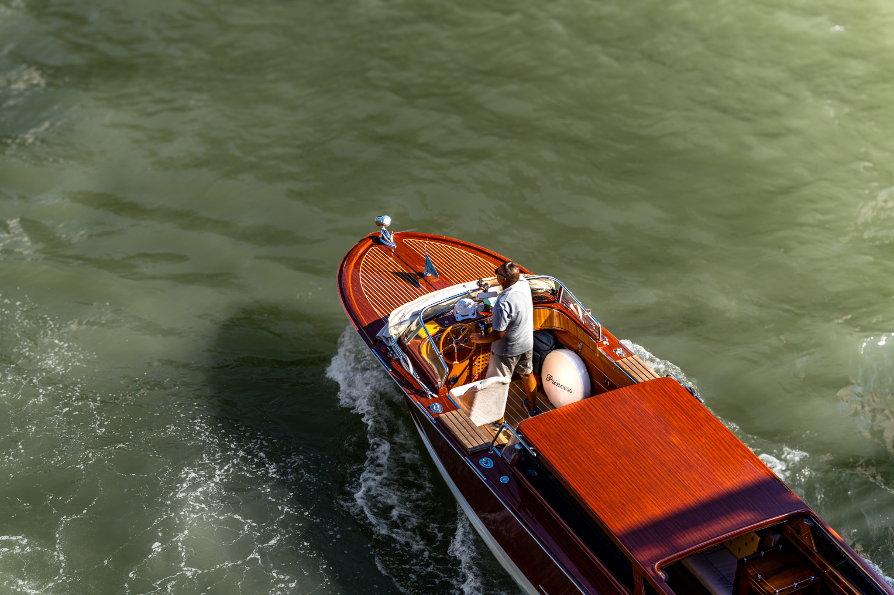
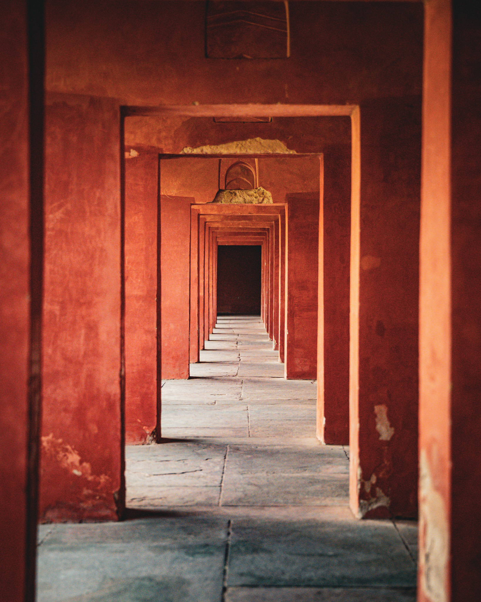

In the Light
01 / 03Agra, India
An exploration of light, place & memory
A collection of quiet moments, architectural stories and places that linger long after we have left them.
Agra, India

A Passing Moment

India
Behind the Lens
Through light, form and fleeting moments, I explore the relationship between architecture, atmosphere and memory.
For photographic enquiries, collaborations and conversations about the work.
Get in Touch